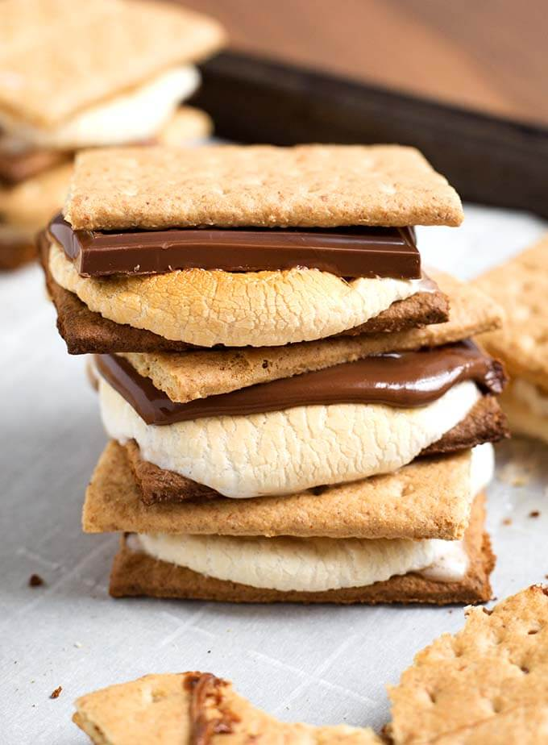

Indoor S'mores

Enjoy s'mores without the campfire with this recipe!
This simple recipe allows you to enjoy s'mores all year long without the need of a campfire.
Ingredients
- Graham Crackers
- Chocolate bars, divided into fourths
- Marshmallows
Steps
- Heat oven to 400 degrees F. Set oven rack in the center of the oven.
- Line baking sheet with parchment paper. Arrange graham cracker halves on the baking sheet and place one piece of chocolate on each graham cracker. Then place marshmallow on top of each chocolate. Place in oven and bake for 3-5 minutes, or until marshmallows puff up and turn golden grown on top.
- Remove from oven and place remaining graham cracker halves on top of the marshmallows.
- Serve immediately and enjoy!